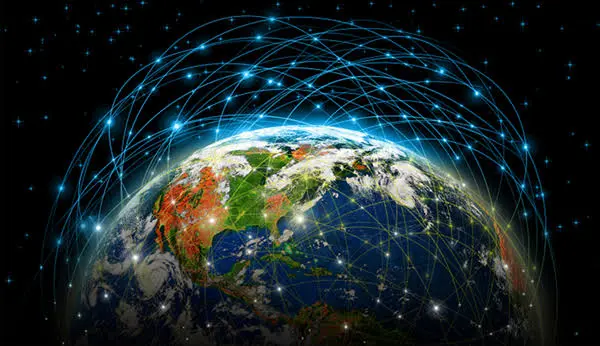

Changes brought by AI
Changes brought by AI
Changes brought by AI

Towards the end of the summer of 1969 – a few weeks after the moon landings, a few days after Woodstock, and a month before the first broadcast of Monty Python's Flying Circus – a large grey metal box was delivered to the office of Leonard Kleinrock, a professor at the University of California in Los Angeles. It was the same size and shape as a household refrigerator, and outwardly, at least, it had about as much charm. But Kleinrock was thrilled: a photograph from the time shows him standing beside it, in requisite late-60s brown tie and brown trousers, beaming like a proud father.
Had he tried to explain his excitement to anyone but his closest colleagues, they probably wouldn't have understood. The few outsiders who knew of the box's existence couldn't even get its name right: it was an IMP, or "interface message processor", but the year before, when a Boston company had won the contract to build it, its local senator, Ted Kennedy, sent a telegram praising its ecumenical spirit in creating the first "interfaith message processor". Needless to say, though, the box that arrived outside Kleinrock's office wasn't a machine capable of fostering understanding among the great religions of the world. It was much more important than that.
It's impossible to say for certain when the internet began, mainly because nobody can agree on what, precisely, the internet is. (This is only partly a philosophical question: it is also a matter of egos, since several of the people who made key contributions are anxious to claim the credit.) But 29 October 1969 – 40 years ago next week – has a strong claim for being, as Kleinrock puts it today, "the day the infant internet uttered its first words". At 10.30pm, as Kleinrock's fellow professors and students crowded around, a computer was connected to the IMP, which made contact with a second IMP, attached to a second computer, several hundred miles away at the Stanford Research Institute, and an undergraduate named Charley Kline tapped out a message. Samuel Morse, sending the first telegraph message 125 years previously, chose the portentous phrase: "What hath God wrought?" But Kline's task was to log in remotely from LA to the Stanford machine, and there was no opportunity for portentousness: his instructions were to type the command LOGIN.

To say that the rest is history is the emptiest of cliches – but trying to express the magnitude of what began that day, and what has happened in the decades since, is an undertaking that quickly exposes the limits of language. It's interesting to compare how much has changed in computing and the internet since 1969 with, say, how much has changed in world politics. Consider even the briefest summary of how much has happened on the global stage since 1969: the Vietnam war ended; the cold war escalated then declined; the Berlin Wall fell; communism collapsed; Islamic fundamentalism surged.
And yet nothing has quite the power to make people in their 30s, 40s or 50s feel very old indeed as reflecting upon the growth of the internet and the world wide web. Twelve years after Charley Kline's first message on the Arpanet, as it was then known, there were still only 213 computers on the network; but 14 years after that, 16 million people were online, and email was beginning to change the world; the first really usable web browser wasn't launched until 1993, but by 1995 we had Amazon, by 1998 Google, and by 2001, Wikipedia, at which point there were 513 million people online. Today the figure is more like 1.7 billion.
Unless you are 15 years old or younger, you have lived through the dotcom bubble and bust, the birth of Friends Reunited and Craigslist and eBay and Facebook and Twitter, blogging, the browser wars, Google Earth, filesharing controversies, the transformation of the record industry, political campaigning, activism and campaigning, the media, publishing, consumer banking, the pornography industry, travel agencies, dating and retail; and unless you're a specialist, you've probably only been following the most attention-grabbing developments. Here's one of countless statistics that are liable to induce feelings akin to vertigo: on New Year's Day 1994 – only yesterday, in other words – there were an estimated 623 websites.
In total. On the whole internet. "This isn't a matter of ego or crowing," says Steve Crocker, who was present that day at UCLA in 1969, "but there has not been, in the entire history of mankind, anything that has changed so dramatically as computer communications, in terms of the rate of change."
Looking back now, Kleinrock and Crocker are both struck by how, as young computer scientists, they were simultaneously aware that they were involved in something momentous and, at the same time, merely addressing a fairly mundane technical problem. On the one hand, they were there because of the Russian Sputnik satellite launch, in 1957, which panicked the American defence establishment, prompting Eisenhower to channel millions of dollars into scientific research, and establishing Arpa, the Advanced Research Projects Agency, to try to win the arms technology race.
The idea was "that we would not get surprised again," said Robert Taylor, the Arpa scientist who secured the money for the Arpanet, persuading the agency's head to give him a million dollars that had been earmarked for ballistic missile research. With another pioneer of the early internet, JCR Licklider, Taylor co-wrote the paper, "The Computer As A Communication Device", which hinted at what was to come. "In a few years, men will be able to communicate more effectively through a machine than face to face," they declared. "That is rather a startling thing to say, but it is our conclusion."
On the other hand, the breakthrough accomplished that night in 1969 was a decidedly down-to-earth one. The Arpanet was not, in itself, intended as some kind of secret weapon to put the Soviets in their place: it was simply a way to enable researchers to access computers remotely, because computers were still vast and expensive, and the scientists needed a way to share resources. (The notion that the network was designed so that it would survive a nuclear attack is an urban myth, though some of those involved sometimes used that argument to obtain funding.)
The technical problem solved by the IMPs wasn't very exciting, either. It was already possible to link computers by telephone lines, but it was glacially slow, and every computer in the network had to be connected, by a dedicated line, to every other computer, which meant you couldn't connect more than a handful of machines without everything becoming monstrously complex and costly.
The solution, called "packet switching" – which owed its existence to the work of a British physicist, Donald Davies – involved breaking data down into blocks that could be routed around any part of the network that happened to be free, before getting reassembled at the other end.
"I thought this was important, but I didn't really think it was as challenging as what I thought of as the 'real research'," says Crocker, a genial Californian, now 65, who went on to play a key role in the expansion of the internet. "I was particularly fascinated, in those days, by artificial intelligence, and by trying to understand how people think. I thought that was a much more substantial and respectable research topic than merely connecting up a few machines. That was certainly useful, but it wasn't art."
Still, Kleinrock recalls a tangible sense of excitement that night as Kline sat down at the SDS Sigma 7 computer, connected to the IMP, and at the same time made telephone contact with his opposite number at Stanford. As his colleagues watched, he typed the letter L, to begin the word LOGIN.
"Have you got the L?" he asked, down the phone line. "Got the L," the voice at Stanford responded.
Kline typed an O. "Have you got the O?"
"Got the O," Stanford replied.
Kline typed a G, at which point the system crashed, and the connection was lost. The G didn't make it through, which meant that, quite by accident, the first message ever transmitted across the nascent internet turned out, after all, to be fittingly biblical:
"LO."
Frenzied visions of a global conscious brain
One of the most intriguing things about the growth of the internet is this: to a select group of technological thinkers, the surprise wasn't how quickly it spread across the world, remaking business, culture and politics – but that it took so long to get off the ground. Even when computers were mainly run on punch-cards and paper tape, there were whispers that it was inevitable that they would one day work collectively, in a network, rather than individually.
(Tracing the origins of online culture even further back is some people's idea of an entertaining game: there are those who will tell you that the Talmud, the book of Jewish law, contains a form of hypertext, the linking-and-clicking structure at the heart of the web.)
In 1945, the American presidential science adviser, Vannevar Bush, was already imagining the "memex", a device in which "an individual stores all his books, records, and communications", which would be linked to each other by "a mesh of associative trails", like weblinks. Others had frenzied visions of the world's machines turning into a kind of conscious brain. And in 1946, an astonishingly complete vision of the future appeared in the magazine Astounding Science Fiction.
In a story entitled A Logic Named Joe, the author Murray Leinster envisioned a world in which every home was equipped with a tabletop box that he called a "logic":
"You got a logic in your house. It looks like a vision receiver used to, only it's got keys instead of dials and you punch the keys for what you wanna get . . . you punch 'Sally Hancock's Phone' an' the screen blinks an' sputters an' you're hooked up with the logic in her house an' if somebody answers you got a vision-phone connection. But besides that, if you punch for the weather forecast [or] who was mistress of the White House durin' Garfield's administration . . . that comes on the screen too. The relays in the tank do it.
The tank is a big buildin' full of all the facts in creation . . . hooked in with all the other tanks all over the country . . . The only thing it won't do is tell you exactly what your wife meant when she said, 'Oh, you think so, do you?' in that peculiar kinda voice "
Deliberately or not, they helped encourage a vibrant culture of hobbyists on the fringes of academia – students and rank amateurs who built their own electronic bulletin-board systems and eventually FidoNet, a network to connect them to each other. An argument can be made that these unofficial tinkerings did as much to create the public internet as did the Arpanet.
Well into the 90s, by the time the Arpanet had been replaced by NSFNet, a larger government-funded network, it was still the official position that only academic researchers, and those affiliated to them, were supposed to use the network. It was the hobbyists, making unofficial connections into the main system, who first opened the internet up to allcomers.
What made all of this possible, on a technical level, was simultaneously the dullest-sounding and most crucial development since Kleinrock's first message. This was the software known as TCP/IP, which made it possible for networks to connect to other networks, creating a "network of networks", capable of expanding virtually infinitely – which is another way of defining what the internet is. It's for this reason that the inventors of TCP/IP, Vint Cerf and Bob Kahn, are contenders for the title of fathers of the internet, although Kleinrock, understandably, disagrees.
"Let me use an analogy," he says. "You would certainly not credit the birth of aviation to the invention of the jet engine. The Wright Brothers launched aviation. Jet engines greatly improved things."
The spread of the internet across the Atlantic, through academia and eventually to the public, is a tale too intricate to recount here, though it bears mentioning that British Telecom and the British government didn't really want the internet at all: along with other European governments, they were in favour of a different networking technology, Open Systems Interconnect.
Nevertheless, by July 1992, an Essex-born businessman named Cliff Stanford had opened Demon Internet, Britain's first commercial internet service provider. Officially, the public still wasn't meant to be connecting to the internet. "But it was never a real problem," Stanford says today
. "The people trying to enforce that weren't working very hard to make it happen, and the people working to do the opposite were working much harder." The French consulate in London was an early customer, paying Demon £10 a month instead of thousands of pounds to lease a private line to Paris from BT.
After a year or so, Demon had between 2,000 and 3,000 users, but they weren't always clear why they had signed up: it was as if they had sensed the direction of the future, in some inchoate fashion, but hadn't thought things through any further than that. "The question we always got was: 'OK, I'm connected – what do I do now?'" Stanford recalls.
"It was one of the most common questions on our support line. We would answer with 'Well, what do you want to do? Do you want to send an email?' 'Well, I don't know anyone with an email address.' People got connected, but they didn't know what was meant to happen next."
Fortunately, a couple of years previously, a British scientist based at Cern, the physics laboratory outside Geneva, had begun to answer that question, and by 1993 his answer was beginning to be known to the general public. What happened was web.